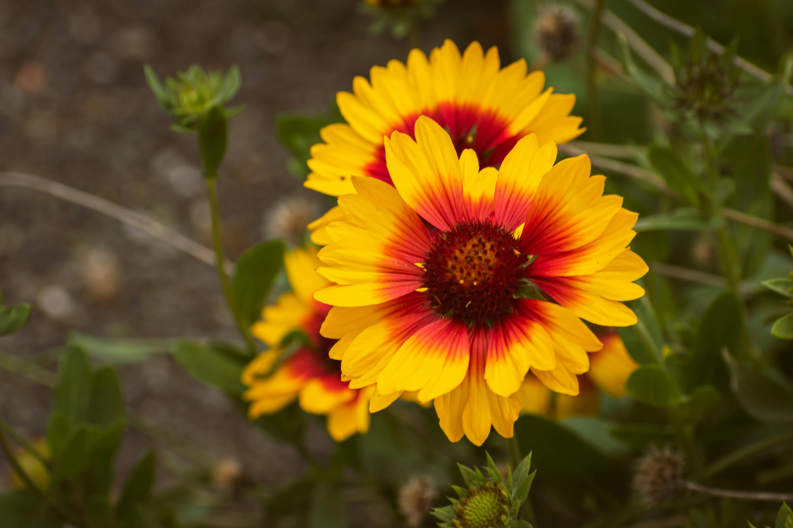
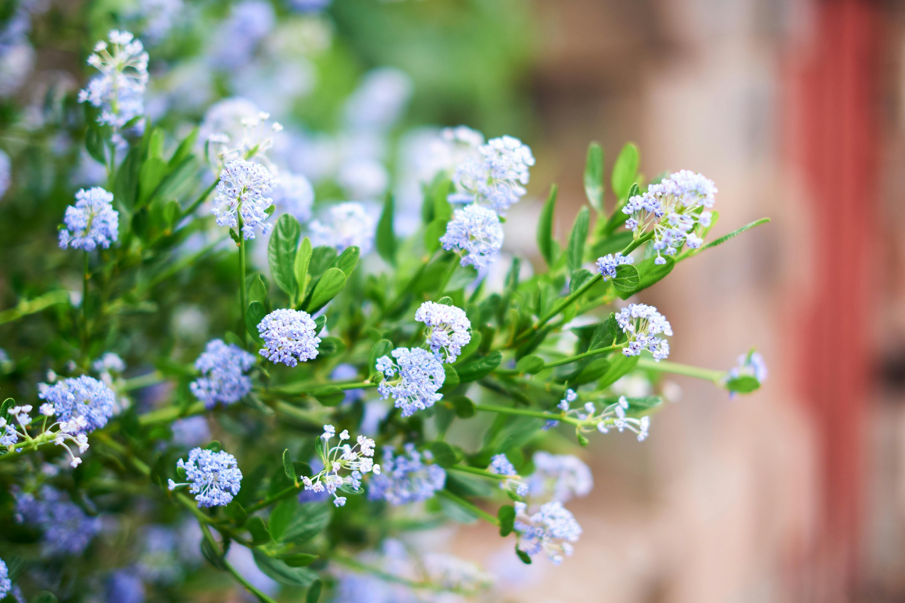
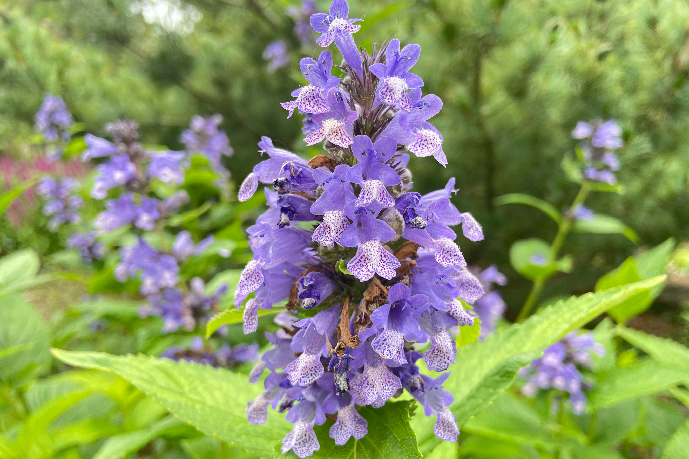
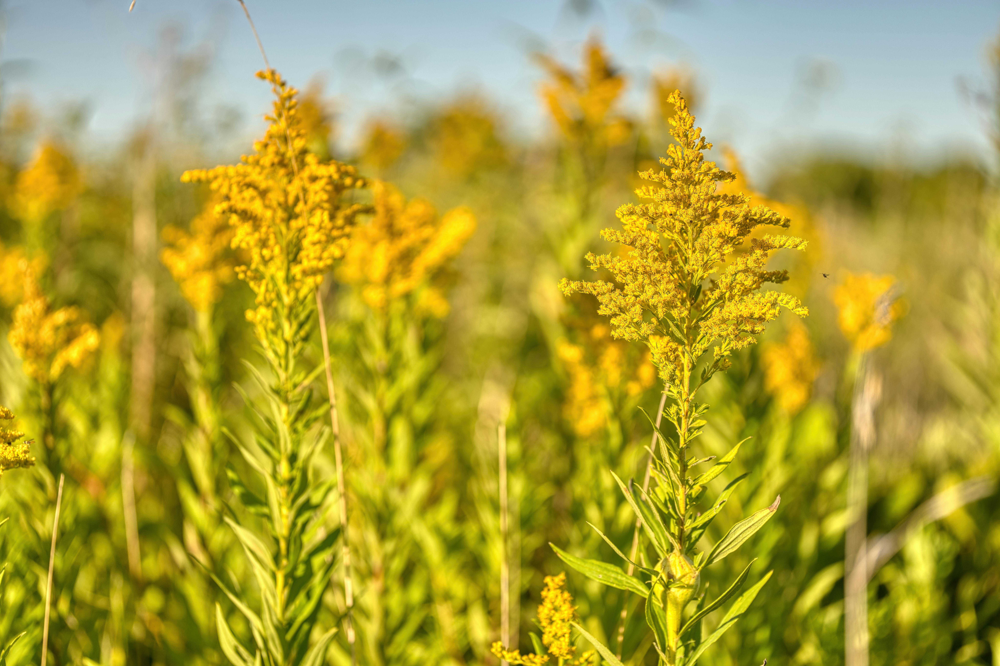
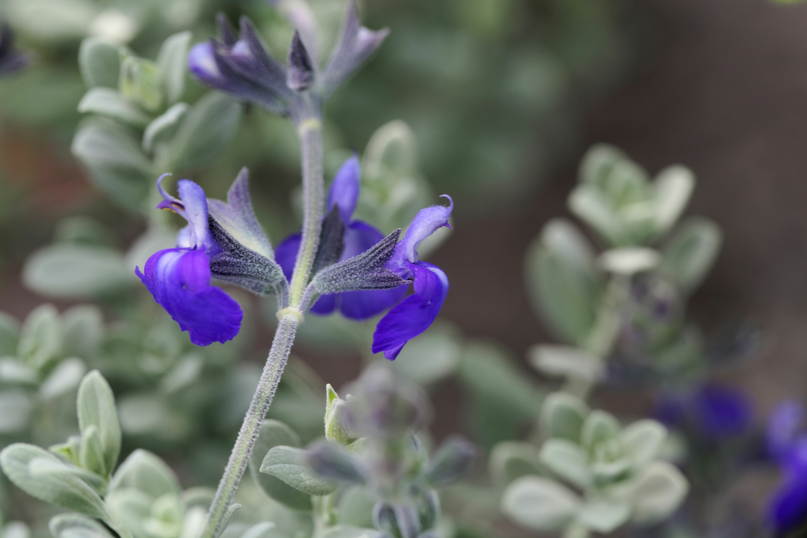
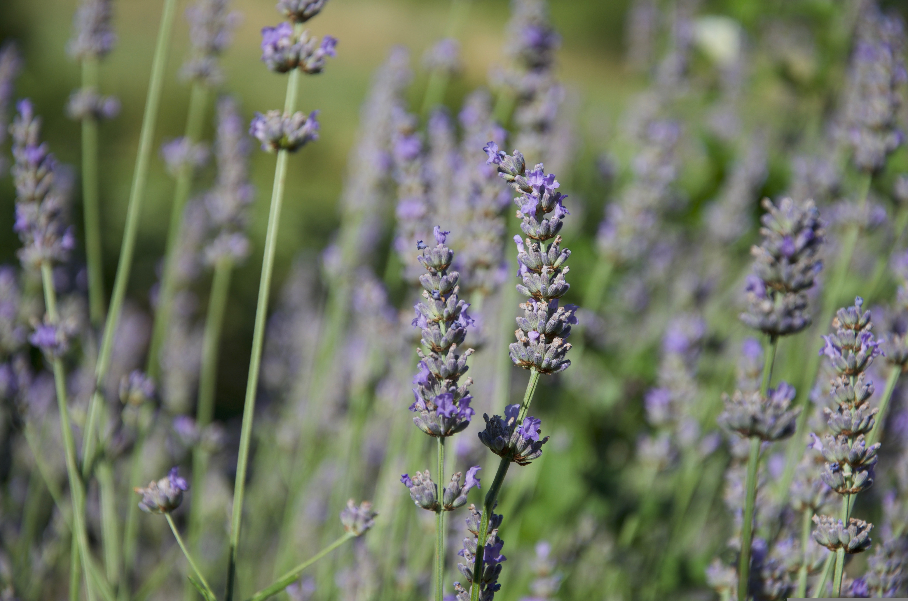
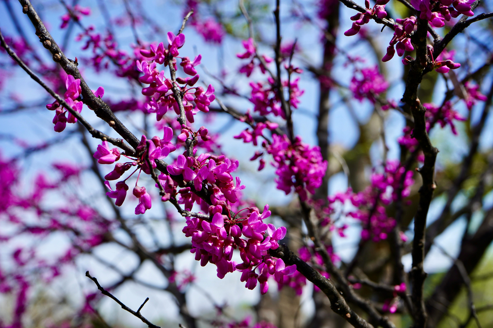
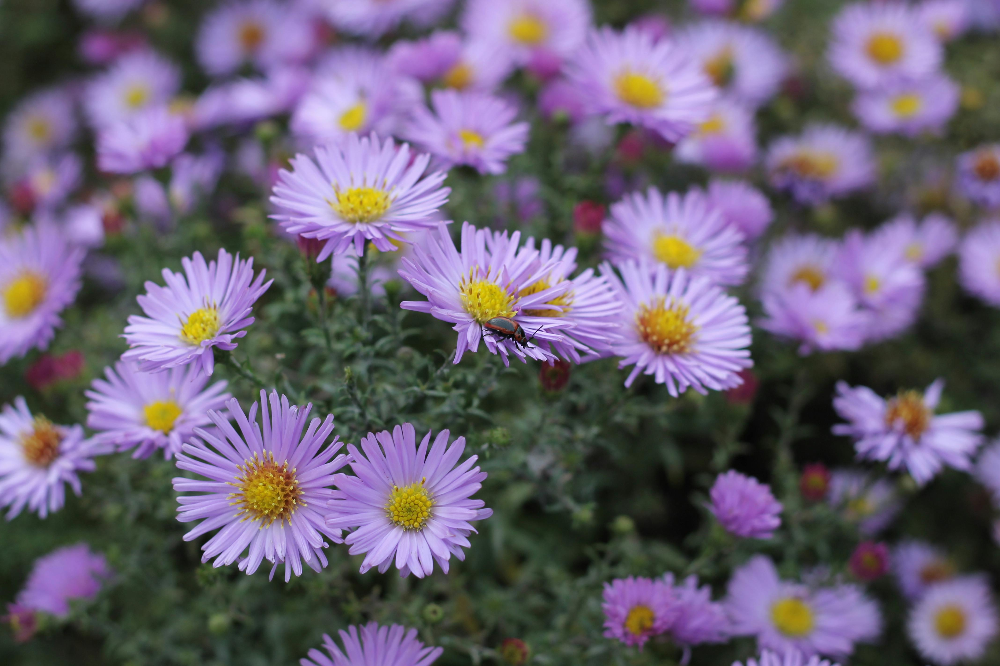
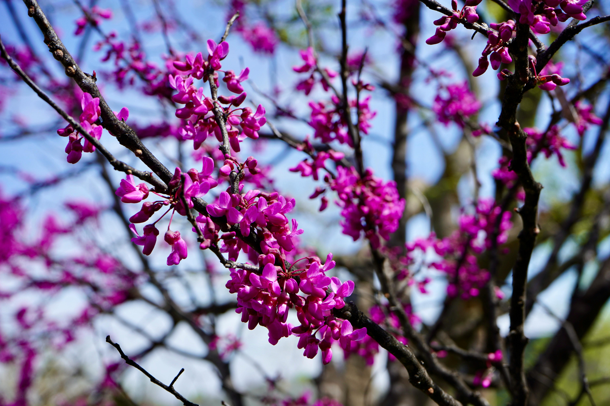
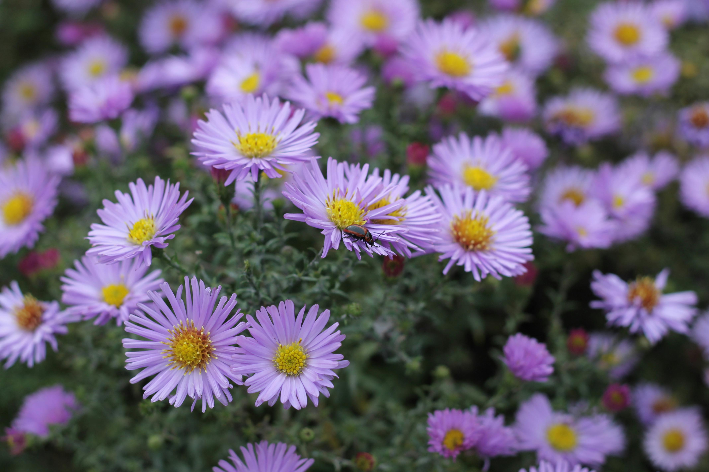

10 Plants for California Indigenous Bees

Blanket flower, Gaillardia × grandiflora

Ray Hartman’s California lilac, Ceanothus ‘Ray Hartman’

Catmint, Nepeta × fassenii

Cascade Creek goldenrod, Solidago californica ‘Cascade Creek’

Germander sage, Salvia chamaedryoides

Goodwin Creek lavender, Lavandula × ginginsii ‘Goodwin Creek Grey’
 California poppy, Eschscholzia californica

Western redbud, Cercis occidentalis

Frikart’s aster, Aster × frikartii ‘Mönch’
California poppy, Eschscholzia californica

Western redbud, Cercis occidentalis

Frikart’s aster, Aster × frikartii ‘Mönch’
 Russian sage, Perovskia atriplicifolia ‘Little Spire’
Russian sage, Perovskia atriplicifolia ‘Little Spire’